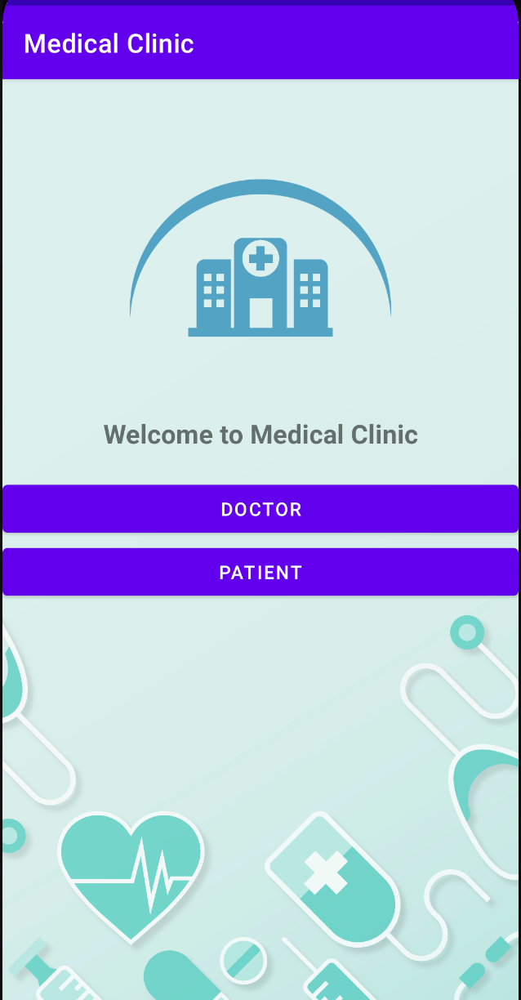

The Development Journey
This project was developed for the final project of CSCB07 at the University of Toronto. We used Agile methodologies to develop this app, specifically we used Scrum. An in depth documentation of our Scrum meetings can be seen at "CSCB07 Project Documentations.pdf" in the repository. Note that this was a group project, you can find my group's contact info and responsibilities on the GitHub repo. I was in charge of several tasks, here is a list of what I did during this project:
- Setup the GitHub repo and added everyone as contributors
- Did a demo on how to use GitHub on the command line and set up the repo on your own pc
- Original patient app design (i.e. I made the original plan for the interfaces, abstract classes and classes (can be seen in the first commit) - we updated this as a team as we went along)
- The UIDesign and ImplementationNotes in the notes folder on GitHub (this was only for the patients side, we just followed a similar design for the doctors, the implementation was updated to what we felt as a group worked better)
- PatientBookDoctorActivity - Allows the patients to view doctors based on the selected filters and then move to PatientDoctorAvailabilitiesActivity
- PatientDoctorAvailabilitiesActivity - Lists the selected doctor’s availabilities and when the user selects one it updates the database accordingly
- DoctorAvailabilitiesActivity - I worked with Anindro and I did the addAvailabilities method, so I implemented the feature that allows doctors to add new availabilities and it updates the database accordingly
- Redid the Login Module to MVP design - The original design had some issues so I thought of a different way to implement the MVP design. I developed the Contract interface and implemented the model, view, and presenter interfaces so that the Login Module followed the MVP desing. I later updated it so that it read data only once to avoid a recurrence of toasts
- Had meeting with Anindro and Mario to talk about the database implementation and how we wanted to structure the data (since our activities worked with it specifically)
- Tested code before pushing (as per working agreement)
- Helped debug code in our group sessions
For more info please visit the GitHub README.
